Diese Seite zeigt die wichtigsten Tafelzeichen der Binnenschifffahrtsstraßen-Ordnung. Die Bilder sind unverändert aus dem Lehrbuch übernommen; die Beschriftungen folgen unten als Liste.
Verbot der Durchfahrt und Sperrung der Schifffahrt
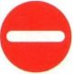
Gesperrte Wasserflächen; jedoch für ein Kleinfahrzeug ohne Antriebsmaschine befahrbar.
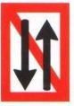
Verbot des Begegnens und Überholens
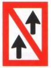
Überholen verboten (gilt nicht für »Kleinfahrzeuge«)
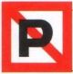
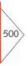
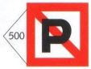
Liegeverbot (hier auf 500 m).
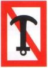
Ankerverbot.
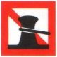
Festmachen verboten.
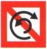
Wendeverbot
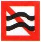
1. Geschwindigkeit vermindern. 2. Schädlichen Sog und Wellenschlag vermeiden.
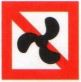
Für motorisierte Boote verboten.
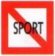
Für Sportboote aller Art verboten.
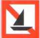
Segeln verboten.
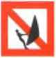
Windsurfen verboten.
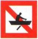
Für Ruderboote verboten.

Einfahrt in Hafen oder Nebenwasserstraße verboten.
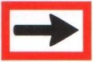
Gebot, die angezeigte Richtung einzuschlagen.
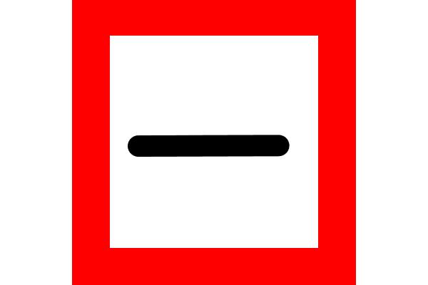
Vor dem Zeichen anhalten, bis Weiterfahrt freigegeben wird.
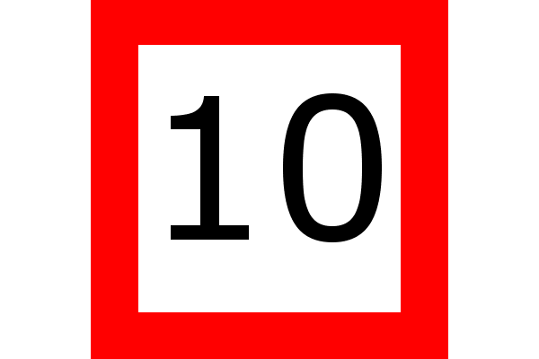
Geschwindigkeitsbeschränkung (hier auf 10 km/h)
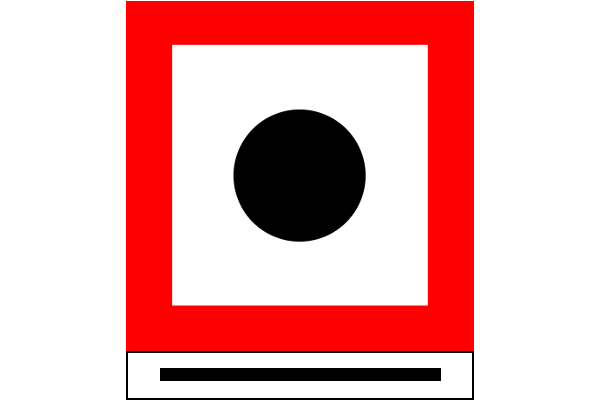
Abgabe eines langen Tons.
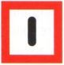
Achtung! Vorsicht!
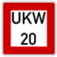
Gebot, Sprechfunk auf dem angegebenen Kanal zu benutzen: Kanal 20
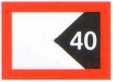
40 m Abstand vom Standort der Tafel halten.
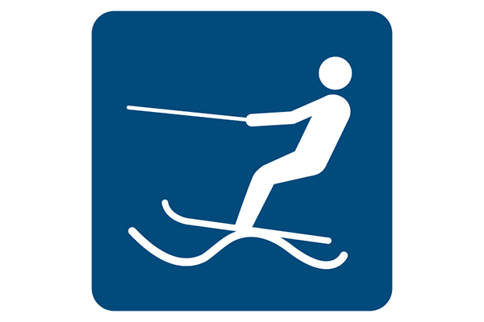
Wasserflächen im Fahrwasser, auf denen Wassermotorradfahren erlaubt ist (entsprechend Wasserski-Verordnung), von Sonnenaufgang bis -Untergang und bei mehr als 1000 m Sicht.

Wasserflächen im Fahrwasser, auf denen Wassermotorradfahren erlaubt ist (entsprechend Wassermotorräder-Verordnung), von Sonnenaufgang bis -Untergang und bei mehr als 1000 m Sicht.
Liegeplatz für Fahrzeuge ohne gefährliche Güter, auch für Kleinfahrzeuge (Sportboote).
Liegeplatz für Fahrzeuge ohne gefährliche Güter, auch für Kleinfahrzeuge (Sportboote).
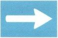
Empfehlung, in diese Richtung zu fahren.
Ankern erlaubt.*
Liegestelle für Fahrzeuge mit explosiven Stoffen, für Kleinfahrzeuge verboten.
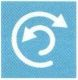
Wendeplatz (dort besteht meist Anker- und Stillliegeverbot).
Festmachen erlaubt.
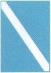
Ende eines Verbots oder Gebots oder Aufhebung einer Einschränkung.
Wehr
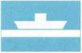
Nicht frei fahrende Fähre (z.B. Ketten- oder Seilfähre).
Hochwasser I
Hochwasser II. Keine Schifffahrt.
* Nur auf Strecken verwendet, auf denen das Ankern, Stillliegen oder Festmachen generell verboten ist, um die Ausnahmeplätze zu markieren.